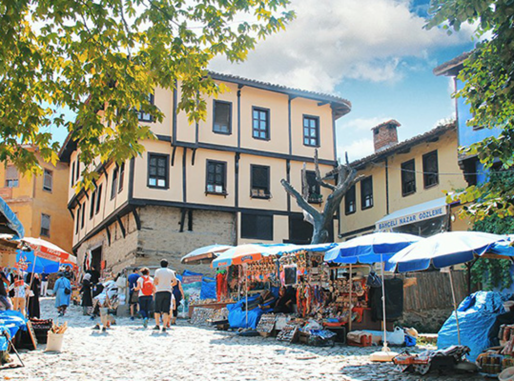

Uludağ


Kış sporlarının ve doğa yürüyüşlerinin vazgeçilmez adresi.
Cumalıkızık

Osmanlı döneminden kalma tarihi köy.
Bursa, doğal güzellikleri ve tarihi zenginlikleriyle sizi bekliyor. Keşfetmeye hazır olun!
Kış sporlarının ve doğa yürüyüşlerinin vazgeçilmez adresi.
Osmanlı döneminden kalma tarihi köy.
Denizi ve doğal güzellikleriyle ünlü ilçe.
Bursa'nın merkezi ve en işlek caddesi.